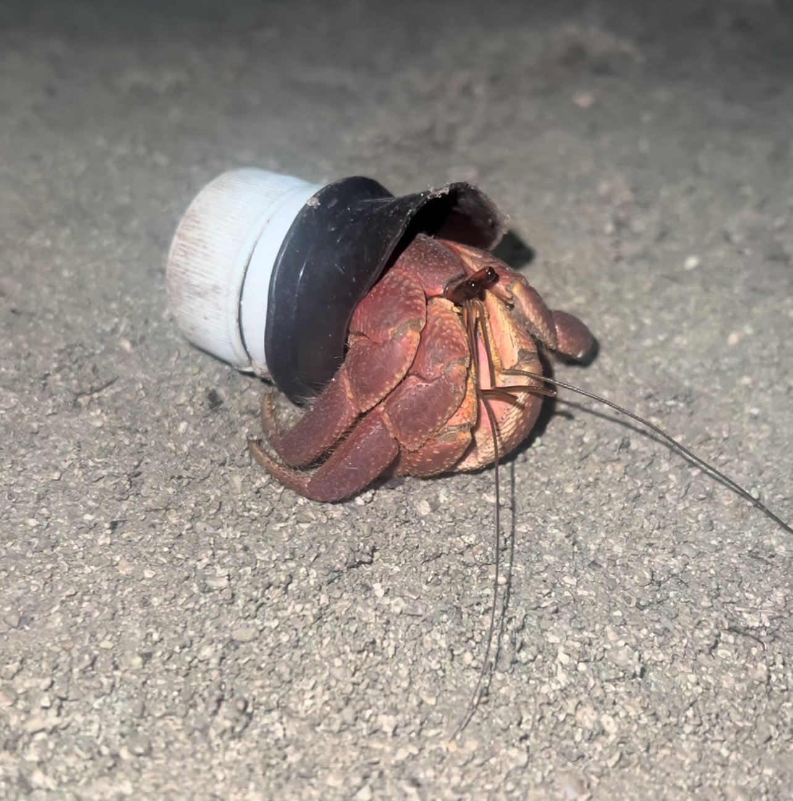
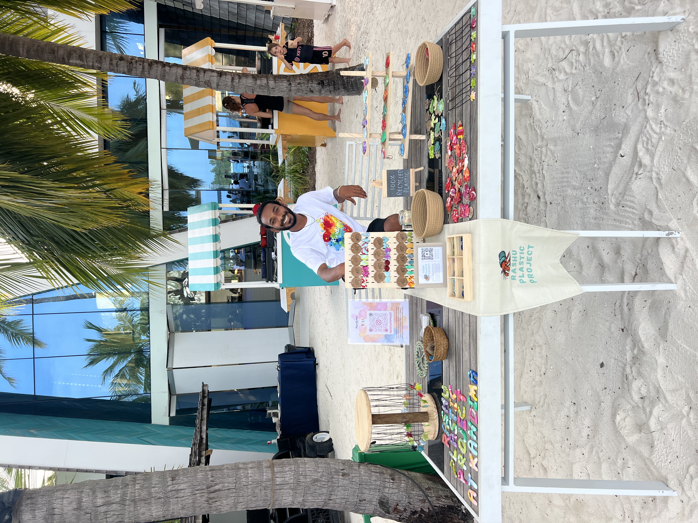
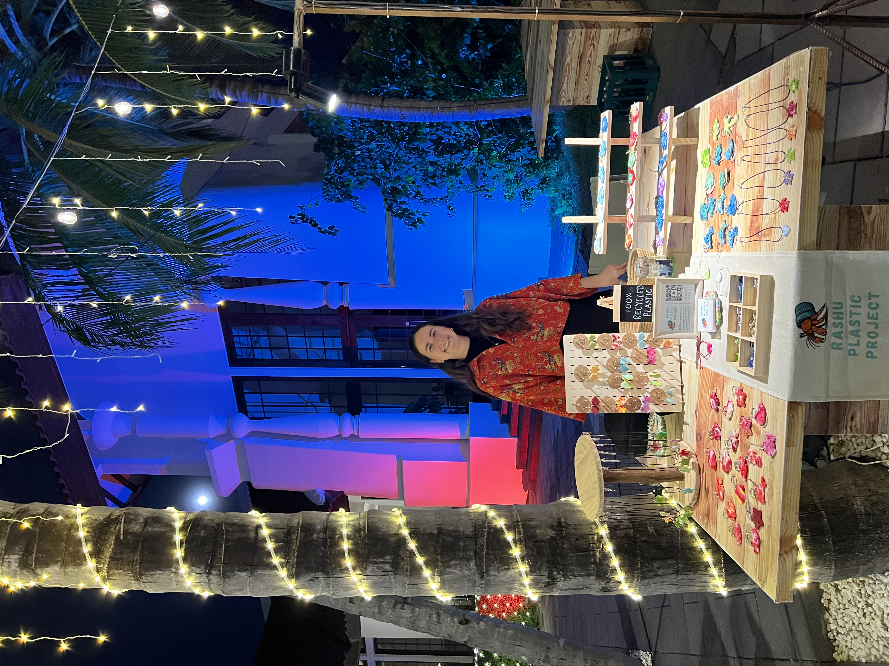

Our Story
Founded for the island, the people, and the marine environment that surrounds us.
The Hermit Crab That Started It All
In the local Dhivehi language, "Rashu" translates to “Island”, and this project was born from a simple walk on the beach. That day, we discovered a hermit crab making its home inside a discarded plastic bottle cap. Hermit crabs, or "baraveli" as they're locally known, are a common sight on our beaches. As they grow, they molt and seek out larger shells to inhabit. Too often, their search leads them through a landscape of plastic waste.
Across the Maldives, the most beautiful shells are often taken as souvenirs, leaving the crabs with fewer and fewer natural homes. This one small hermit crab became our logo and a powerful symbol for our mission: we must give plastic a new home, not the wildlife. We set out to remove the plastic, leave nature's treasures untouched, and create sustainable souvenirs with a meaningful impact.

Our Team
Currently, the team consists of just two members, but with a whole island community of support.

Mintu
A local Maldivian freediver and fisherman, Mimrah has grown up watching his islands shrink due to beach erosion and coral reefs die from bleaching. He is driven to make a positive impact on the land and people around him.

Bethany
A marine biologist, Bethany brings valuable expertise from her Master’s Degree in Marine Science and Climate Change, where she focused her thesis project on Microplastics.